A 9x9 grid of LEDs powered by a Raspberry Pi. This was my first-ever 'personal project', and something that
I am still super proud of. If you just want to see the code, check it out in the Github
repository. Otherwise, read on to see how it was made!
How it was Made
Materials:
- Wood
- Wood Filler
- Wood Glue
- Black Glossy Paint + Primer Spray Paint
- White Glossy Spray Paint
- Plexiglass
- Frosted Window Film
- Kit to Apply Window Film
- Glue Dots
- Neodymium Magnets
- Magnetic Tape
- Black Acrylic Paint
- A Raspberry Pi 2 Model B
- WS2812 LED Strips
- 3M Velcro Strips
- Flux
- Solder
- Male/Male Jumper Wires
- Solderless Breadboard
- 74AHCT125 Level Converter
- 2.1mm Female Barrel Jack Adapter
- 5 Volt Power Supply
- Poster Board
Steps:
Created the box. Using scrap wood from my garage and a table saw, I cut each piece to the dimensions
needed to hold 81 LEDs, as well as the Raspberry Pi and the breadboard at the bottom of the box. I used the
wood glue and nails in order to hold the sides to the base.
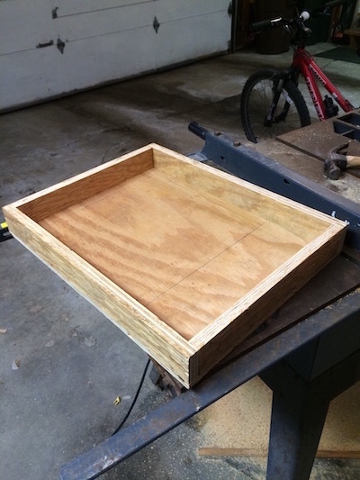
Painted the box. The wood that I used wasn’t “nice” by any standards, and therefore had a lot of
grooves. My Grandpa (he helped me on a good chunk of constructing the box) suggested that I use wood filler so
that it would create a smoother finish. After I filled in all of the grooves, I used an orbital sander to buff
out any of the rough edges and the excess wood filler. Because I really wanted the colors from the LEDs to
pop, I decided to paint the outside of the box black, and the inside white so that it would produce a nice
reflective surface for the light to bounce around. At first I used a normal black, glossy spray paint but even
after the second coat, the black wasn’t looking uniform enough, so i picked up a can of the paint + primer and
that did nicely. For the tops of the walls I used a sponge brush and black acrylic paint to ensure that the
magnets would be able to be glued to a dry surface, just in case the glossy paint was something that couldn’t
be adhered to.
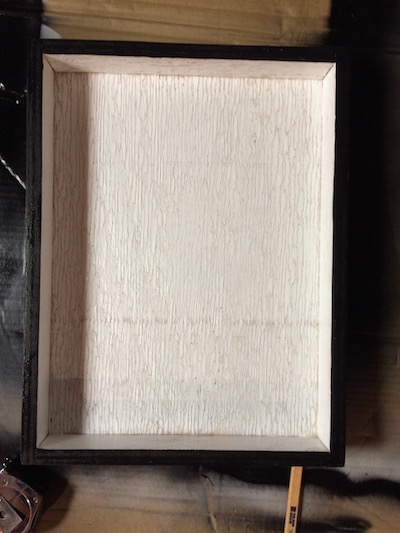
Cut and soldered the LED strips. I had never soldered before, but luckily my Dad had and gave me some
help. So did the internet. Something that I
found particularly ingenious was the whole idea of “tinning.” By applying a small amount of the solder to the
copper plates on the LED strip and doing the same with the end of the wire, they bonded together swiftly and
without mess. The flux was also a huge help – because I was only using a 30 watt soldering iron, it would’ve
taken a very time to heat up the solder to melting point. I cut 9 strips with 9 LEDs each in order to make a
square grid of 81 LEDs. Each strip had 6 copper plates, three on one end and three on the other. However, the
starting strip was already equipped with wires to connect to the breadboard, and the last strip did not
connect to anything besides the strip before it. So, all in all, I cut and stripped 24 jumper wires of various
colors down to size and soldered each to their respective strips.
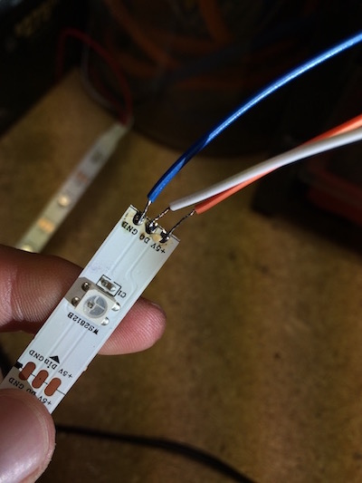
Connected the Raspberry Pi to the LED strips. Using the diagram and instructions on this trusty website, I was able to
purchase the correct parts as well as connect everything to the correct holes on the breadboard. After it was
all connected correctly, I searched for and found a GitHub repository complete with
instructions and even a few example programs to get me started. Everything is controlled by JavaScript
(Node.js). This was probably the riskiest step of the project, just because of both the fact that I had never
done anything like this before, and it took me a few tries to get it right. Although I have this listed as the
fourth step of the project to help with the flow, it was really the first thing that I did. I did not, of
course, want to build everything only to find out that there wasn’t going to be any lights showing up to the
light show.
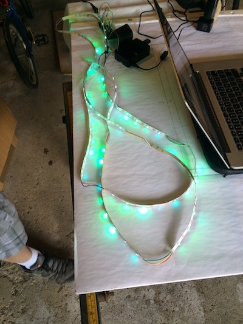
Threw everything in the box. Most of the components had adhesive backings, like the breadboard and the
LED strips. However, to ensure that everything was going to stay where I put it the first time, I added glue
dots here and there. The Raspberry Pi, however, I connected to the base with 3M velcro strips, because if I
wanted to ever use that Pi for another project or needed to modify it in any way shape or form, I would want
to be able to take it out. I also drilled a hole in the bottom right corner of the box so that the power
supply for the LEDs and the Pi could enter the box.
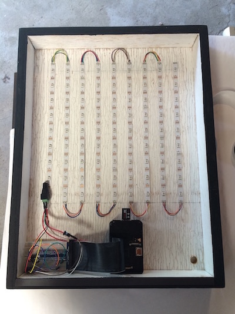
Created the cover. I ran out and bought a few new blades for my jigsaw, and then cut the hole in the
piece of wood that I chose for the cover. After the hole was cut, I sanded and painted it. The plexiglass that
I bought was almost the correct dimensions, and just required a tiny bit of trimming. I used the window film
kit to adhere the film to the plexiglass, both to the front and back side to ensure that you can’t see into
the case, but that the lights won’t have any problem shining through. I loaded the plexiglass up with glue
dots and threw it on the back of the cover. After I made sure that the plexiglass fit within the box, I added
the magnets at key points around the edges of the box. The magnetic tape proved to be very weak, and that is
why I decided to use the neodymium magnets. I went with magnets so that whenever I want to get into the box,
it will be very easy to.
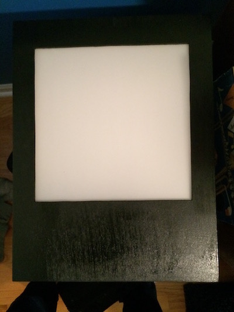
Created the grid. This was, by far, the most tedious part of the project. I used white poster board so
that I wouldn’t have to paint anything, and it was also relatively easy to cut. Using just a ruler and a
X-Acto knife, I cut 20 strips of poster board each with 10 notches halfway into the strip so that they could
be pieced together with the others. When I put the strips together and placed it in the box, I noticed that
some pieces were higher to the plexiglass than the others, so I went back and cut deeper notches so that they
were all even. I then took weather stripping and laid 10 pieces down horizontally so that when the grid was in
the box with the cover on, it would be pressed down and the grid pushed against the cover as much as possible.
Everything fit in nice and snug, so the grid really didn’t need to be taped or glued in place.
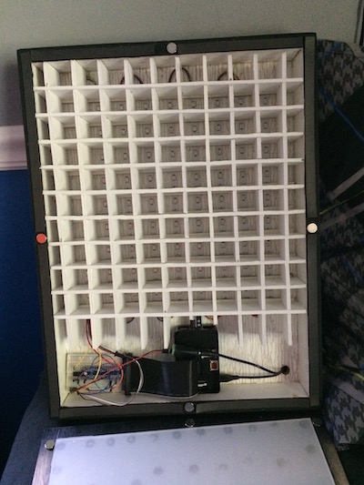
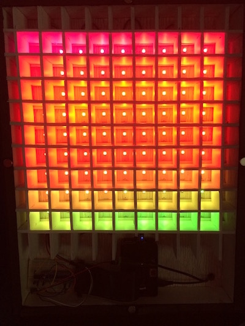
Examples
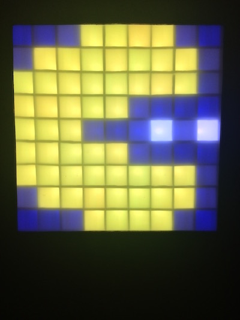
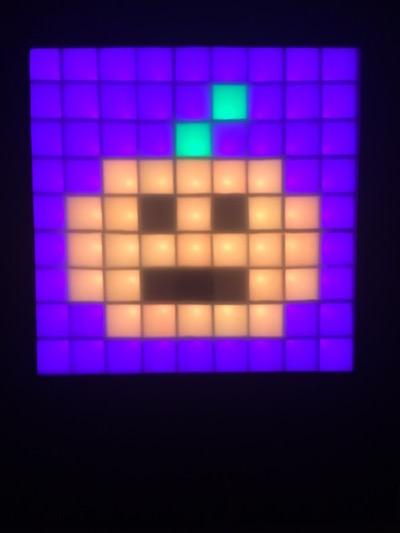
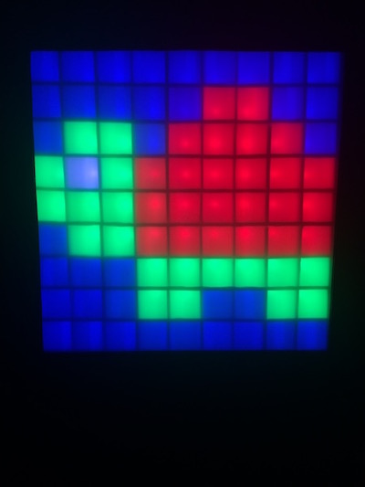